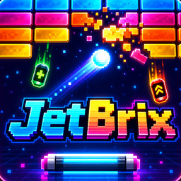
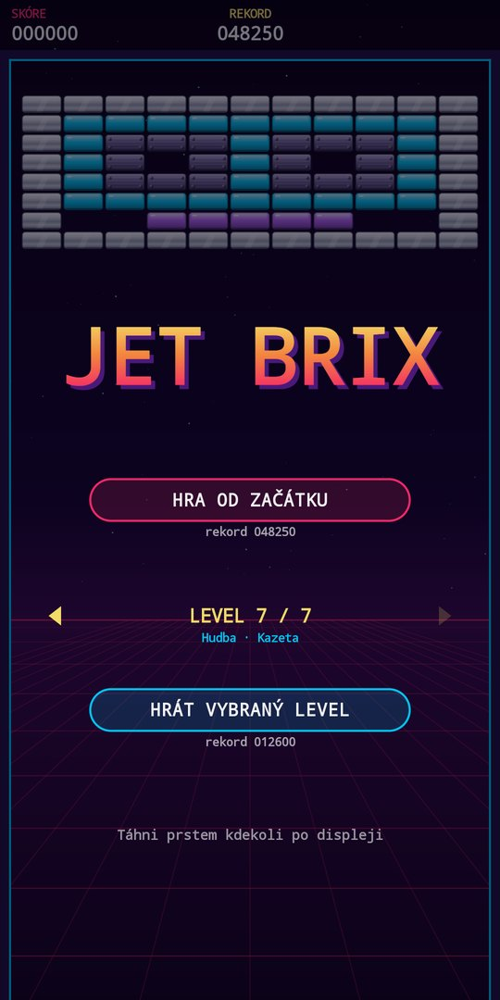
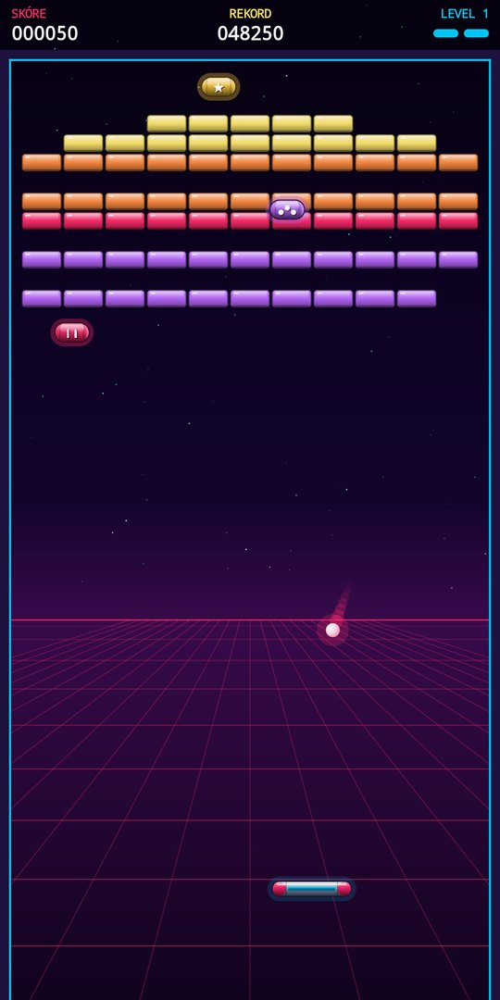
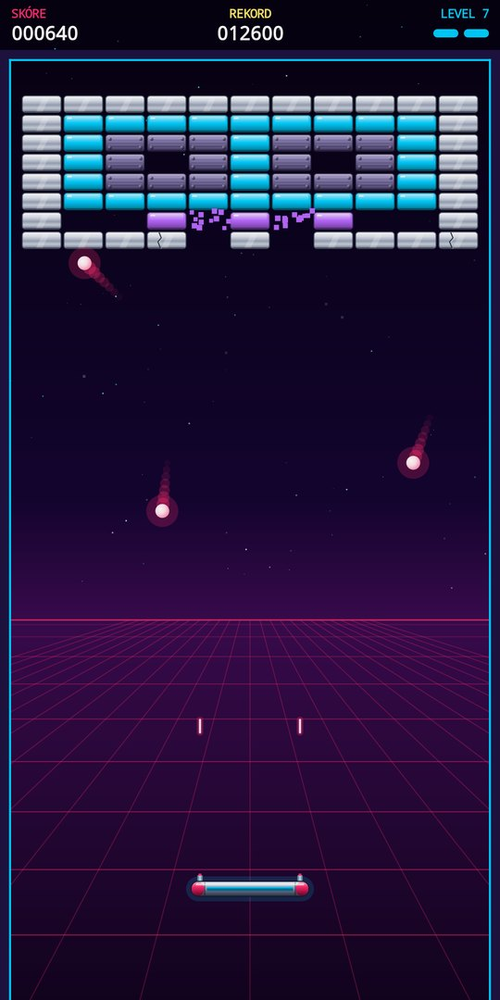
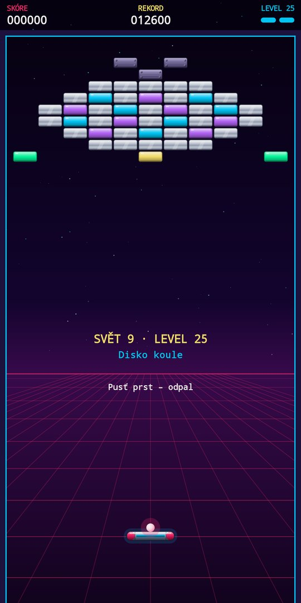

Rdanhel Dev
Rdanhel Dev
ProjektJet Brix
Retro arkáda v neonech 80. let. Táhnutím prstu ovládáš svítící pálku, odrážíš míček a rozbíjíš zdi z kostek. Pod tebou ubíhá synthwave mřížka a k tomu hrají čipové zvuky jako ze staré herny. 30 levelů, 10 světů, power-upy a okruhy, které jsou pořád rychlejší.
Hra v kostce
Jednoduché ovládání, rychlá hra na pár minut a rekord, který chceš překonat.
Ovládání prstem
Táhni prstem kdekoli po displeji a pálka se pohybuje s ním. Zvednutím prstu odpálíš míček. Úhel odrazu záleží na tom, kam míček na pálku dopadne.
Kostky všeho druhu
Barevné kostky padnou na jeden zásah. Stříbrné vydrží dva nebo tři a po každém zásahu prasknou. Kovové jsou nezničitelné a míček od nich jen odskočí.
Power-upy z nebe
Kapsle padají shora v náhodných chvílích: širší pálka, víc míčků (každý se rozdělí na tři), body navíc a nejvzácnější laser, ze kterého pálka pár vteřin sama střílí.
Okruhy dokola
Po posledním levelu se pokračuje znovu od prvního. Každý další okruh má o 20 % rychlejší míček a méně power-upů. Skóre se sčítá, dokud máš životy.
Odemykání levelů
Každý dohraný level odemkne další. Odemčený level si pak můžeš kdykoli zahrát samostatně a trénovat ho, dokud to jde.
Retro vzhled a zvuk
Neonové barvy, lesklé kostky, padající částice, scanlines jako na starém monitoru a zvuky generované čipovým syntezátorem. Plynule běží i na displejích 90/120 Hz.
10 světů, 30 levelů
Každý level je obrázek z kostek a světy jsou postupně těžší.
- Neonové město – Západ slunce, Mrakodrapy, Palmy
- Videohry – Joystick, Srdce, Herna
- Hudba – Kazeta, Ekvalizér, Sluchátka
- Vesmír – Raketa, Planeta, UFO
- Pláž – Vlny, Slunečník, Maják
- Kino – Filmový pás, Popcorn, 3D brýle
- Sport – Skateboard, Tenis, Pohár
- Technika – Disketa, Počítač, Robot
- Párty – Disko koule, Reproduktory, Koktejl
- Finále – Pevnost, Osmdesátky, Labyrint
Režimy hry
Každý režim má vlastní rekord.
- Hra od začátku – od levelu 1 až po 30 a pak znovu dokola, pokaždé rychleji. Jak daleko se dostaneš?
- Vybraný level – zvol kterýkoli odemčený level a opakuj ho. Po každém dohrání je míček o 20 % rychlejší a power-upů je o 20 % méně.
Hra se pozastaví tlačítkem Zpět nebo při odchodu z aplikace. Rekordy a odemčené levely zůstávají jen ve tvém telefonu.
Hra v číslech
- Levely 30 v 10 světech
- Power-upy 4 druhy
- Míčků naráz až 8
- Životy 3
- Každý další okruh míček +20 %
- Oprávnění a internet žádné
Screenshoty




Ke stažení
Jet Brix je zdarma, bez reklam a bez nákupů v aplikaci. Nepotřebuje internet ani žádná oprávnění. Aplikace se připravuje k vydání na Google Play.
Android – Google Play
Odkaz na Google Play přibude hned po vydání aplikace. Zásady ochrany osobních údajů jsou k dispozici už teď.